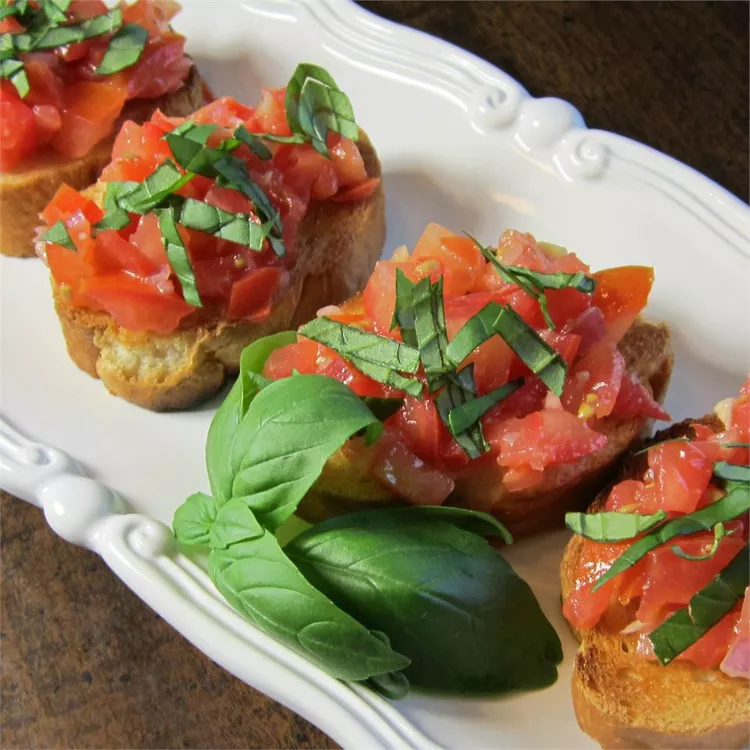

Bruschetta with Shallots
Shallots are the special ingredient in this easy, filling bruschetta.
The tomato mixture tastes best when prepared ahead of time and chilled for approximately 1 hour.
Ingredients
- 12 roma (plum) tomatoes, chopped
- 1 tablespoon minced garlic
- 2 tablespoons minced shallots
- 1 cup chopped fresh basil leaves
- freshly ground black pepper to taste
- 1/2 teaspoon vanilla extract
Back to Home